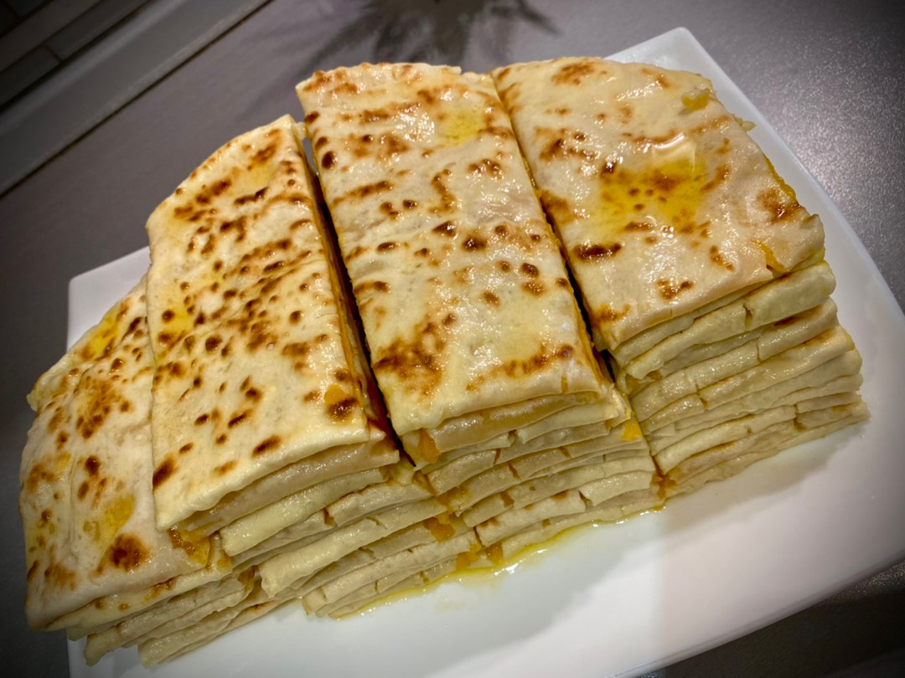

Хингалш

Описание
Чепалгаш (чечен. ЧӀепалгаш) — традиционное национальное блюдо чеченцев и ингушей, в состав которого входят кефир, сода, пшеничная мука, соль, сухой домашний творог, яйцо, зелёный лук, сливочное масло. Представляет собой закрытую лепёшку из мягкого теста с начинкой из творога и яйца, приготовленную на сухой.
История вайнахских народов суровая, потому и блюда, которыми гордится любой чеченец или ингуш, быстры в приготовлении и высококалорийны - один раз поел и сыт на весь день. Чепалгаш подается на стол, как дополнение ко второму блюду. Но место в жизни чеченца и ингуша чепалгаш занимает особое, с ним в истории вайнахского народа связаны некоторые обряды и даже сказки.
Ингредиенты
- Мука пшеничная — примерно 600
- Кефир (комнатной температуры) — 500 мл
- Соль — 1 ч. ложка
- Сода — 1 ч. ложка
- Творог — 500 г
- Лук зелёный — 100 г
- Масло сливочное (растопленное) — для смазывания лепёшек
Шаги
- Нарезаем зеленый лук и перемешиваем с луком
- Формируем из творожной массы шарики по количеству лепешек
- В кефир комнатной температуры добавляем соду и соль. Ждём, пока сода начнёт действовать. И в просеянную муку добавляем кефир, всё хорошо перемешиваем.
- Замешиваем тесто (оно должно быть липким), выкладываем на стол, накрываем и даём тесту постоять 30 минут и делим тесто на 7 частей, катаем из них шарики.
- На столе, посыпанном мукой, раскатываем каждый шарик теста в небольшую лепёшку под начинку. Выкладываем на лепёшку творожную начинку, приподнимаем края теста, собираем складками и хорошо скрепляем, чтобы получился шарик с творогом внутри.
- Сперва аккуратно формируем руками, а затем раскатываем лепёшку диаметром примерно 20-25 см.
- Жарим лепёшки с начинкой на сухой сковороде (без масла) до румяности с двух сторон. Готовые лепёшки чепалгаш слегка обмакиваем в кипяченую воду, выкладываем на тарелку и промазываем растопленным маслом.